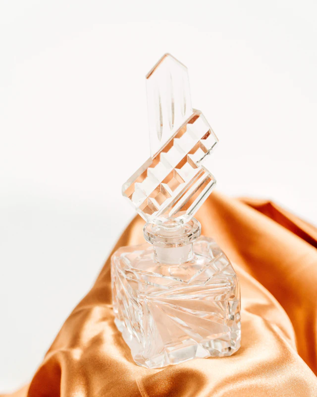

Fragrance Guide
Choosing a fragrance is easier when you know what you're smelling. This guide explains how a perfume develops on skin, what the names on the bottle mean, and how the main scent families differ, with practical advice on wearing and caring for your fragrances.
Fragrance is personal. The same perfume can smell and last differently from one person to the next, so treat everything here as a starting point for your own nose rather than a set of rules.

How a fragrance unfolds
A perfume isn't a single smell. It is a blend of many ingredients that evaporate at different speeds, so the fragrance you notice changes as it wears. Perfumers often describe this in three stages, usually drawn as a pyramid.
-
Top notes: the first impression
Top notes are what you smell first. They are usually made of light, quick-to-evaporate ingredients such as citrus, fresh herbs and some fruits. They give the opening its brightness and character, and they are generally the first to soften and fade.
-
Heart notes: the character
As the opening settles, the heart notes come forward. Sometimes called middle notes, they form the core of the fragrance and give it its personality. Florals, spices and many fruity and green notes often sit here.
-
Base notes: the foundation
Base notes are typically the deeper, slower-evaporating ingredients: woods, resins, amber, vanilla, musk and oud, for example. They anchor the composition and support the lighter notes, and in many fragrances they are what you notice most in the later hours of wear. This final stage is often called the dry down.
Understanding fragrance concentrations
Terms such as Eau de Parfum and Eau de Toilette generally indicate the concentration of fragrance materials in a formula. The composition and other ingredients also influence how a fragrance smells and performs.
How a fragrance smells, how far it projects and how long it lasts depend just as much on its ingredients and how it was composed. A higher concentration doesn't necessarily mean a fragrance will project more or less, and a lower concentration doesn't necessarily mean it will smell lighter or brighter. Each fragrance house also uses these terms in its own way, so the label is best read as a starting point rather than a promise.
| Name | Also seen as | How it is generally described |
|---|---|---|
| Extrait de Parfum | Extrait, Parfum, Pure Parfum | One of the most concentrated formats a house may offer. Often described as rich and full-bodied, and usually applied sparingly. |
| Eau de Parfum | EDP | A widely used format that, within the same fragrance line, is commonly more concentrated than the Eau de Toilette. A popular everyday choice. |
| Eau de Toilette | EDT | A widely used format that is commonly less concentrated than an Eau de Parfum from the same line. Suits many occasions and climates. |
| Eau de Cologne | EDC, Cologne | Traditionally a light, refreshing style, historically associated with citrus and aromatic notes and generous application. |
Naming conventions vary. Some houses use “Parfum” for their most concentrated version, others for a different style altogether, and terms such as “Intense” or “Elixir” have no single agreed meaning.
Same name, different fragrance
When a fragrance comes in several concentrations, the versions are not always simply stronger or weaker copies of each other. Perfumers often adjust the formula, so an Eau de Parfum and an Eau de Toilette that share a name can smell noticeably different. It's worth trying the specific version you're interested in.
What about perfume oils?
In Arabian and South Asian perfumery, fragrance is also traditionally enjoyed as a concentrated perfume oil, often called an attar. Attars are usually alcohol-free and applied directly to the skin, and they tend to wear intimately and develop gradually with body warmth.
Discovering scent families
Scent families group fragrances by their main character. They are a simple way to describe what you enjoy and to discover new fragrances with a similar feel. Most perfumes combine several families, for example a floral with a vanilla base or a citrus with woods, so think of these as directions rather than strict categories.
-
Fresh
Clean, airy and aquatic
Fresh fragrances feel light and clear, recalling clean linen, sea air or crushed green leaves. They often include aquatic, green or herbal notes and are a natural choice for warm days and for anyone who prefers a subtle, easy-going scent.
-
Citrus
Bright, zesty and sparkling
Built around fruits such as bergamot, lemon, orange, mandarin and grapefruit. Citrus notes feel energising and uplifting. Because many citrus ingredients evaporate quickly, they often lead the opening, and citrus fragrances frequently rely on woods or musks underneath for depth.
-
Floral
Petals, blossoms and white flowers
The largest and most varied family, ranging from fresh, dewy petals to rich, heady white flowers. Rose, jasmine, orange blossom and tuberose are classic examples. Florals can be soft and romantic or bold and dramatic, and they are worn by everyone.
-
Fruity
Juicy, ripe and playful
Fruity fragrances feature notes such as pear, apple, peach, berries or pineapple. They feel cheerful and approachable, and are often paired with florals or sweet notes for a softer, more modern style.
-
Sweet
Gourmand, rich and indulgent
Sometimes called gourmand fragrances, these are inspired by flavours you could almost taste: caramel, praline, honey, chocolate, coffee or sugared notes. They feel warm, comforting and inviting, and many people enjoy them in the evening or in cooler weather.
-
Vanilla
Warm, creamy and comforting
Vanilla brings smooth sweetness and softness. On its own it can feel cosy and familiar; paired with woods, spices or smoke it becomes deeper and more sophisticated. It appears in a great many fragrances across every family.
-
Woody
Dry woods, cedar and earth
Woody fragrances draw on materials such as cedar, sandalwood, vetiver and patchouli. They range from dry, pencil-shaving cedar to creamy sandalwood and earthy vetiver. Woods add structure and depth, which is why so many fragrances are built on a woody foundation.
-
Oud
Deep, resinous and smoky
Oud, also known as agarwood, is one of perfumery's most treasured materials and a cornerstone of Arabian perfumery. It can smell smoky, resinous, leathery or slightly medicinal, and is often paired with rose, amber or spices. Oud fragrances may use natural oud, or accords composed by perfumers to evoke its character. Many combine the two.
-
Amber
Golden resins and soft warmth
In perfumery, “amber” doesn't refer to the fossilised stone. It describes a warm, glowing accord, typically built from resins such as labdanum and benzoin together with vanilla. Amber fragrances feel rich, enveloping and sensual.
-
Spicy
Pepper, saffron and warm spice
Spices add energy and depth. Fresher spices such as pink pepper and cardamom give sparkle, while warmer spices such as cinnamon, clove and saffron feel rich and intense. Spicy notes often sit at the heart of a fragrance, giving it character and contrast.
-
Musk
Soft, skin-like and clean
Musk gives fragrances a soft, smooth, skin-like quality, sometimes clean and powdery, sometimes warmer and more sensual. In modern perfumery, musk notes are generally created with synthetic musk ingredients rather than materials of animal origin. Musks often add smoothness and can help carry a fragrance into its later stages.
Not sure which family suits you? Think about scents you already enjoy, such as a favourite flower, a dessert, fresh citrus or the smell of wood. That is usually the best place to start.
Wearing and caring for fragrance
Longevity, projection and sillage
Three words come up often when people describe how a fragrance performs:
- Longevity: how long you can notice the fragrance after applying it.
- Projection: how far the scent radiates from your skin, and how easily others notice it while you're still.
- Sillage: the trail a fragrance leaves in the air as you move. The word is French for “wake”.
None of these is fixed. They depend on the fragrance itself, how much you apply, where you apply it, your skin, the temperature and humidity, and even the fabric you're wearing. The same fragrance can behave differently on different people, so any description of performance is only ever approximate.
“I can't smell it any more”
After a while, your nose naturally becomes used to a scent you're wearing. This is known as olfactory fatigue, or nose blindness. The fragrance is often still there and noticeable to people around you, so there is no need to keep reapplying simply because you've stopped noticing it.
How to apply fragrance
Where to apply
There is no single right place. Many people like to apply fragrance to the neck, behind the ears, the inner wrists or the chest, where body warmth can help it develop. Others prefer a light mist over clothing or hair; see the note below. Experiment and see what you enjoy.
Start light
Begin with one or two sprays and add more only if you want to. It's easy to add more and difficult to take it away, especially in close spaces such as offices or cars.
Let it settle
After spraying, let the fragrance settle naturally. Many perfumers suggest not rubbing your wrists together, as they feel it can blur the opening of the scent.
Moisturised skin
Some people find fragrance lasts longer on moisturised skin than on very dry skin. An unscented moisturiser applied first can help without competing with the scent.
Clothing and hair
Fragrance can cling to fabric and hair for a long time. If you choose to apply it this way, do so lightly and with care:
- Clothing: some perfumes, particularly darker or oil-based ones, may mark delicate or light-coloured materials, so spray from a little distance and test somewhere discreet first.
- Hair: a single light mist from a distance is usually enough. Some people find alcohol-based fragrances drying, so you may prefer a product made specifically for hair.
- Always: keep fragrance away from your eyes, and follow the directions and any warnings given for the product you are using.
Sensitive skin
If you have sensitive skin, try a small amount first. If a fragrance causes irritation, wash it off and stop using it.
Storing your fragrances
Keep it cool and dark
Light, heat and air are what change a fragrance over time. Store bottles somewhere cool and shaded, away from direct sunlight, windows and heat sources.
Avoid steamy bathrooms and hot cars
Frequent changes in heat and humidity can affect a fragrance. A bedroom drawer, a cupboard or the original box is usually a better home than a bathroom shelf, and a parked car can become very hot.
Close it properly
Replace the cap after each use to limit contact with air, and keep perfume oils tightly sealed.
Signs a fragrance has changed
A noticeably darker colour, or an opening that smells sour, sharp or flat, can suggest a fragrance has been affected by heat or light. Good storage helps your fragrances stay true for as long as possible.
A–Z fragrance glossary
A
- Accord
- A blend of ingredients combined to create a single new impression, much like a chord in music.
- Aldehydes
- Ingredients that can give a fragrance a sparkling, soapy or freshly laundered lift, associated with many classic perfumes.
- Amber
- A warm, resinous accord built from materials such as labdanum, benzoin and vanilla. Not the fossilised stone.
- Ambergris
- A rare material formed in sperm whales and long valued in perfumery for its warm, salty, radiant quality. Because natural ambergris is scarce, many fragrances use other materials to create an ambergris-like effect. How a particular fragrance achieves it varies.
- Aromatic
- A style built around herbs such as lavender, rosemary, sage and mint.
- Attar
- A concentrated perfume oil, usually alcohol-free and applied directly to the skin; a long-standing tradition in Arabian and South Asian perfumery.
B
- Bakhoor
- Fragrant wood chips or blocks, often soaked in perfume oils, burned to scent the home and clothing in Arabian tradition.
- Base notes
- The deeper, slower-evaporating layer of a fragrance. See How a fragrance unfolds.
- Blind buy
- Buying a fragrance without having smelled it first.
C
- Chypre
- A classic fragrance style traditionally built on bergamot, oakmoss and patchouli: elegant, mossy and slightly bitter.
- Concentration
- The relative amount of fragrance materials in a formula. Terms such as Eau de Parfum and Eau de Toilette describe common concentration categories, but do not guarantee a particular scent profile or performance.
D
- Dry down
- The later stage of a fragrance on skin, as the deeper notes come into focus.
E
- Eau de Cologne (EDC)
- Traditionally a light, refreshing format, historically associated with citrus and aromatic notes.
- Eau de Parfum (EDP)
- A widely used format, commonly more concentrated than an Eau de Toilette from the same fragrance line.
- Eau de Toilette (EDT)
- A widely used format, commonly less concentrated than an Eau de Parfum from the same fragrance line.
- Extrait de Parfum
- A highly concentrated format, sometimes labelled Extrait or Parfum. Naming and strength vary between houses.
F
- Flanker
- A new version of an existing fragrance that shares its name, such as an “Intense” or “Night” edition, usually with its own interpretation.
- Fougère
- A traditional fragrance style, French for “fern”, classically built around lavender, coumarin and oakmoss. Historically linked with men's fragrances, it is enjoyed by people of all genders.
G
- Gourmand
- A fragrance inspired by edible notes such as vanilla, caramel, chocolate or coffee. See the Sweet family.
H
- Heart notes
- The core of a fragrance that emerges after the opening. Also called middle notes.
L
- Layering
- Wearing two or more fragrances, or a scented body product with a fragrance, together to create a personal combination.
- Linear fragrance
- A fragrance that smells much the same from first spray to dry down.
- Longevity
- How long a fragrance remains noticeable after application.
M
- Musk
- Soft, skin-like notes that add smoothness; in modern perfumery generally created with synthetic musk ingredients.
N
- Nose
- A professional perfumer: the person who composes a fragrance.
- Notes
- The individual smells you can identify within a fragrance, such as bergamot, rose or sandalwood.
O
- Olfactory fatigue
- When your nose stops noticing a scent you've been wearing for a while. Also called nose blindness.
- Oud
- Also known as agarwood; a deep, resinous material central to Arabian perfumery, used in fragrance either as natural oud or as an accord that evokes it.
P
- Projection
- How far a fragrance radiates from the skin.
R
- Reformulation
- When a fragrance's formula is changed over time, for example because of ingredient availability or regulation.
S
- Signature scent
- A fragrance someone wears so often that it becomes part of their identity.
- Sillage
- The scent trail a fragrance leaves as you move. French for “wake”.
- Skin chemistry
- The way your skin's natural characteristics influence how a fragrance smells and lasts on you.
- Soliflore
- A fragrance focused on a single flower, such as rose or jasmine.
T
- Top notes
- The first, lightest notes you smell after applying a fragrance.
U
- Unisex
- A fragrance designed to be worn by anyone. In truth, any fragrance can be worn by anyone who enjoys it.
Find a fragrance that feels like you.
Now that you know what to look for, explore the collection, or tell us what you love and we'll help you find a direction.
Ask us for a recommendation (opens WhatsApp in a new tab)